EL AMOR
AMOR
El amor ha dejado de ser exclusivo de los artistas, los filósofos y los enamorados y ha pasado a ser un tema de interés científico dada su importancia en la vida del ser humano. Aunque cada uno de nosotros puede tener su propia definición del amor, desde el punto de vista biológico se le ha caracterizado como un fenómeno integral que involucra nuestro cerebro y nuestros órganos productores de hormonas, como la hipófisis y la glándula adrenal. En el amor participan varios mensajeros químicos que proporcionan una gama de sensaciones que van desde el placer, la euforia, la confianza y la seguridad, hasta la ansiedad, la obsesión y la depresión. Es un fenómeno que incluye patrones conductuales, cognitivos y emocionales característicos.
Todas estas sensaciones y conductas complejas que se viven en el amor han llevado a los investigadores a estudiar cada uno de sus componentes y conocer de este modo las bases biológicas que lo sustentan. Por ejemplo, hay investigaciones que indagan sobre las regiones cerebrales que participan en el enamoramiento, mientras que otras, a través de experimentos de genética molecular, tratan de conocer las bases de los lazos afectivos y las interacciones sociales.
Desde el punto de vista biológico, podemos distinguir básicamente dos tipos de amor: el amor de pareja o romántico y el amor filial (maternal o paternal). Ambos son fundamentales para la supervivencia de nuestra especie, ya que el primero en términos generales lleva a la reproducción, mientras que el segundo permite que las crías reciban los cuidados adecuados para su desarrollo. Recordemos que en la especie humana (así como en los otros primates), las crías requieren de los cuidados de la madre o el padre por un tiempo considerable. Se ha establecido además que el amor de pareja genera seguridad y confianza, lo que asegura protección en situaciones cambiantes en el entorno. Así, el significado biológico del amor se encuentra en la perpetuación y supervivencia de nuestra especie.
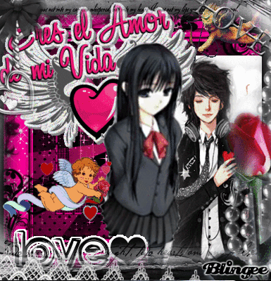
Email
facebook
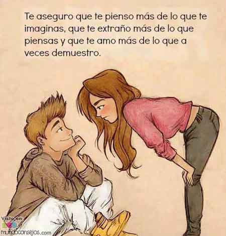
Mariposas en el estómago
La primera fase de una relación amorosa es el enamoramiento, el cual es transitorio, dominado por procesos de atracción y que inicia por la percepción y el consecuente placer producido por la estimulación de nuestros sentidos. Antiguamente el estímulo más importante (quizá lo siga siendo) en una relación amorosa, y que generó por mucho tiempo la frase "amor a primera vista", era justamente la vista, dada la importancia que ha adquirido para nosotros este sentido a lo largo de la evolución, sin hacer menos la estimulación del oído, el olfato, el gusto y el tacto. Sin embargo, en estos tiempos modernos los avances en la comunicación han hecho que muchas veces el primer contacto entre dos personas sea virtual, a través del correo electrónico o las redes sociales, y que sin tener una estimulación olfativa, auditiva o incluso visual se pueda desencadenar el enamoramiento.
Durante el enamoramiento ocurren cambios fisiológicos impresionantes en nuestro organismo. Se modifica la producción de hormonas (mensajeros químicos secretados por una glándula y con efectos distintos sobre la mente y el cuerpo), cambia de manera notable nuestro estado de ánimo e incluso se llega a tener una percepción diferente de la realidad.
Se ha encontrado que en los primeros meses de enamoramiento hay un aumento en los niveles de cortisol, una hormona esteroide relacionada con el estrés.
El impacto de los medios de comunicación electrónica vía Internet ha sido tan grande que ha modificado nuestras vidas en muchos ámbitos, incluido el emocional. Así, a través de las redes sociales y de páginas comerciales dedicadas a que encontremos a nuestra "pareja ideal", nos podemos enamorar de alguien a quien jamás hayamos visto ni escuchado, sin haber percibido su olor o tocado su piel.
En los inicios de este tipo de comunicación, el principal vínculo consistía en los sentimientos expresados por las ideas y gustos de nuestra contraparte virtual; actualmente podemos contar con una estimulación visual (aunque no siempre sea el primer estímulo como ocurre la mayoría de las veces en un entorno real), dado que en muchos sitios de Internet se pueden desplegar imágenes, o incluso auditiva si se cuenta con los dispositivos electrónicos para tal fin.
¿Con todo mi corazón?
A pesar de lo romántico que suena decir o que nos digan "te amo con todo mi corazón", todos nuestros pensamientos, sentimientos y sueños provienen de la actividad cerebral.
Existe en nuestro cerebro un sistema de comunicación, conformado por diferentes estructuras interconectadas, que se conoce como sistema límbico, y es el que permite experimentar toda la gama de emociones que se presentan en nuestra vida.
Se sabe que existen algunas regiones cerebrales que están involucradas tanto en el amor maternal como en el amor de pareja. De hecho, se ha propuesto que ambos tienen orígenes evolutivos similares y se manifiestan a través de mecanismos celulares análogos.
Así, en experimentos en donde se realizan análisis de imágenes del cerebro mediante técnicas como la resonancia magnética funcional, se ha visto que la presentación de fotografías de un hijo a una madre o del ser amado a la pareja enamorada, activa regiones similares del sistema límbico, aunque hay otras estructuras exclusivas para cada tipo de amor.
Por ejemplo, las estructuras relacionadas con el deseo sexual, como el hipotálamo (región cerebral encargada de muchas funciones, entre ellas la conducta sexual), sólo se activan en el caso del amor de pareja.
Las moléculas del amor
Dada la gama de sensaciones que involucra el fenómeno del amor, no cabe pensar que exista "la molécula del amor"; sin embargo, sí hay sustancias íntimamente ligadas a los estados emocionales que se presentan en el amor romántico y en la conducta maternal, además de ser fundamentales en el establecimiento de los lazos afectivos entre los individuos. Estas sustancias son algunas hormonas como la vasopresina y la oxitocina, neurotransmisores (moléculas encargadas de la comunicación entre las neuronas) como la dopamina y la serotonina, y los opiáceos endógenos —moléculas producidas en nuestro cerebro relacionadas con las sensaciones de placer y la disminución del dolor— como las endorfinas y las encefalinas.
Además de estas funciones, se ha encontrado que ambas participan en el despliegue de conductas sociales, el establecimiento y el mantenimiento de los lazos entre la madre y su cría, y entre las parejas.
En varias especies de mamíferos, incluido el ser humano, se ha descubierto que la oxitocina se libera durante el trabajo de parto y la lactancia, lo cual es importante para el establecimiento de la relación madre-hijo. La administración intracerebral de oxitocina a ovejas hembra las induce a cuidar crías ajenas y tener conducta maternal. También se ha encontrado que durante el coito hay un incremento en la secreción de oxitocina y vasopresina, lo cual afianza el vínculo entre las parejas. En ratones de pradera se ha demostrado que la vasopresina estimula la conducta paternal, el mantenimiento de los lazos entre las parejas y las conductas monógamas.
Desde algunos años se han comercializado perfumes que contienen oxitocina o feromonas sintéticas, ya sea masculinas o femeninas, que supuestamente pueden atraer al sexo opuesto. (ver ¿Cómo ves? No. 88). Las feromonas son sustancias volátiles que producimos en glándulas de la piel, como las sudoríparas, y que estimulan el sistema olfativo. Aunque estas moléculas activan una región en la nariz llamada órgano vomeronasal y en condiciones de laboratorio se ha encontrado que producen diferentes respuestas fisiológicas en el ser humano —entre ellas cambios en la respiración, en la frecuencia cardiaca y en los niveles de hormonas como las gonadotropinas y la testosterona—, se desconoce si tienen efectos fuera del ámbito experimental y obviamente no estarían específicamente dirigidas hacia alguna persona en particular, de manera que si nos llenamos de estas feromonas podríamos correr el riesgo de atraer a la persona equivocada. Dadas las diferentes sensaciones de placer que provoca el amor —que incluso pueden generar ciertas conductas adictivas—, cuando sufrimos alguna decepción o "terminan" con nosotros, se produce una ausencia de todas estas sensaciones positivas, placenteras y reconfortantes, lo que nos lleva al "mal de amores": nuestra salud se deteriora debido a un estrés crónico; hay confusión y se pueden alcanzar estados significativos de depresión. Si esto llegara a ocurrir, se requerirá asistencia psicológica o psiquiátrica y en casos graves el uso de fármacos antidepresivos, muchos de los cuales aumentan los niveles de serotonina. Aunque según los expertos en amores, el mejor remedio ante una ruptura es pasar por un periodo de duelo por la pérdida del ser querido y después… enamorarse de nuevo.
Infidelidad y genes
En el amor romántico uno de los componentes que en general es determinante para mantener una relación de pareja es la fidelidad, que en la mayoría de las sociedades se refiere a tener una sola pareja sexual al mismo tiempo. Además de todos los factores sociales que pueden influir en el establecimiento de vínculos con una o más parejas al mismo tiempo, los científicos se han preguntado si existe alguna base biológica de la fidelidad y al parecer la respuesta podría ser positiva
Existen roedores de especies muy cercanas del mismo género (Microtus) que se han establecido en diferentes hábitats, por ejemplo en la pradera y en la montaña, que muestran conductas monógamas o polígamas muy evidentes. Estas especies presentan diferencias en la concentración y la distribución de los receptores para vasopresina en el cerebro; los receptores son proteínas que se unen a los mensajeros químicos, como hormonas o neurotransmisores, para que puedan llevar a cabo sus efectos en la célula. Se ha visto que el gen del receptor para vasopresina presenta variantes entre una especie y otra. En experimentos de biología molecular en los que en etapas muy tempranas del desarrollo embrionario se transfiere el gen de la especie monógama a la especie polígama, esta última despliega conductas monógamas en la etapa adulta.
Estos experimentos motivaron a un grupo de investigadores suecos y de Estados Unidos, encabezado por Hasse Walum del Instituto Karolinska en Suecia, a estudiar en el ser humano la relación entre las variantes del gen del receptor para vasopresina, denominado AVPR1A, y los lazos de pareja. En 2008 se publicaron en la revista Proceedings of the National Academy of Sciences los resultados de la investigación: se encontró una asociación entre las variantes de ese gen en varones y los lazos afectivos con su pareja, demostrándose que hombres suecos con una particular variante del gen presentaban mayor probabilidad de mantenerse solteros o bien, si estaban casados, de presentar problemas conyugales debido a débiles lazos de unión con su pareja y al establecimiento de relaciones sexuales extramaritales. No se han caracterizado las variantes del gen del receptor para vasopresina en otras poblaciones, por lo que se desconoce si dichas variantes son exclusivas de poblaciones nórdicas.
Aunque se ha llegado a especular que para encontrar la pareja ideal, o al menos una pareja fiel, en un futuro bastaría con un estudio de los genes que participan en nuestras conductas sociales —como los receptores para vasopresina, oxitocina o dopamina—, y así determinar si el hombre o la mujer tienen cierta predisposición a tener más de una pareja al mismo tiempo, el asunto no es tan simple. El hecho, por ejemplo, de contar con una variante en particular del gen del receptor para vasopresina, o de algún otro gen involucrado en los lazos afectivos y las relaciones sociales, no necesariamente determinará una conducta monógama o polígama; nuestras características y conductas son el resultado de la interacción de nuestros genes con el medio ambiente y hay muchos factores medioambientales que modulan las relaciones de pareja.
Para siempre… o no
Una de las preguntas más recurrentes y todavía sin respuesta, es cuánto dura el amor y si éste puede ser para siempre. Diversos grupos de psicólogos y psiquiatras han especulado que el enamoramiento dura unos cuantos meses y después se pasa a un estado más consciente y crítico de la realidad, en el cual se empiezan a valorar las distintas características de la pareja; es entonces cuando en teoría podemos definir si la relación que tenemos es realmente confiable, placentera y reconfortante.
El tiempo en que se pasa de una etapa a otra y en el que se mantiene la segunda, que es lo más difícil, depende de muchos factores; entre ellos se han destacado los procesos de memoria y aprendizaje y la adaptación de nuestros sistemas sensoriales. Se ha propuesto que en una relación que recién inicia, hay una gran cantidad de estímulos y situaciones novedosas que causan en la otra persona interés, placer y una buena dosis de aprendizaje. Pero después de cierto tiempo, los estímulos dejan de ser novedosos, el aprendizaje disminuye y se establecen pautas conductuales rutinarias que ya no despiertan el interés y la motivación iniciales. Por lo anterior, se dice que el secreto está en variar las actividades y conductas que se presentan en una relación de pareja.

 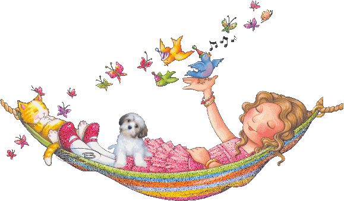
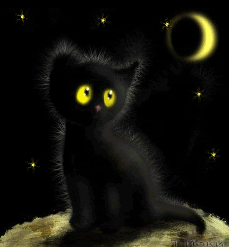
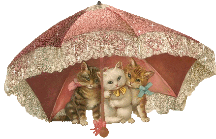
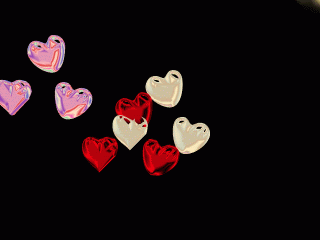
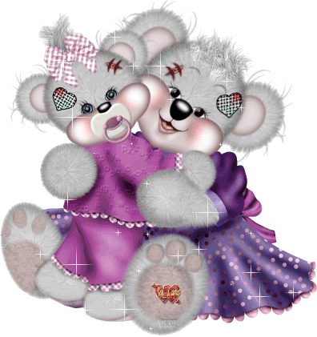
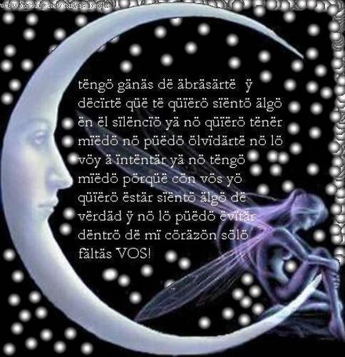
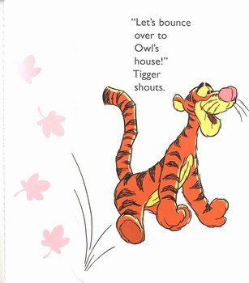
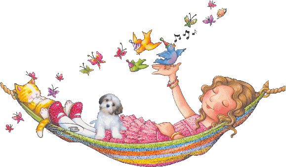
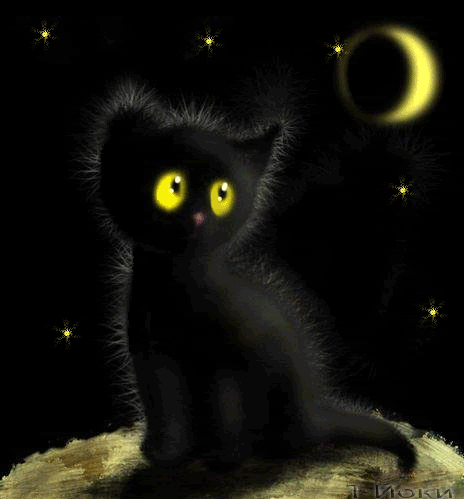
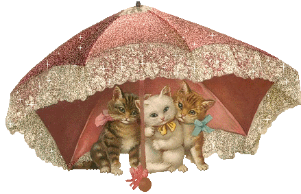
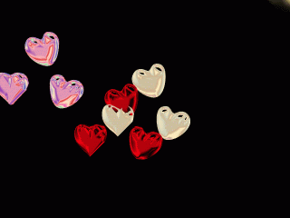
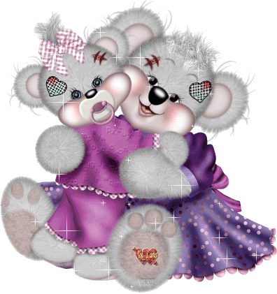
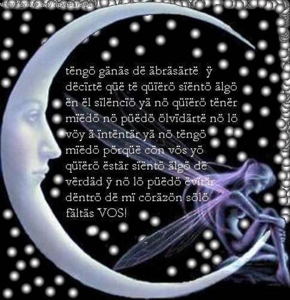
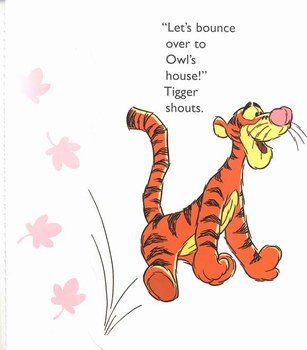